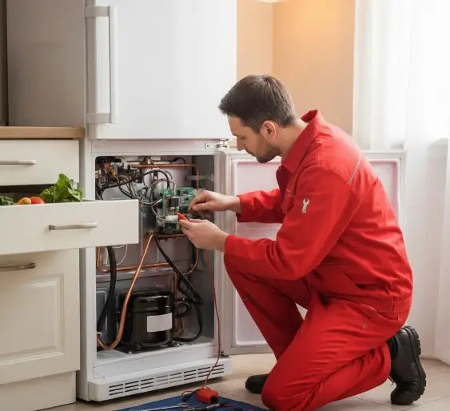

الإصلاح الاحترافي مقابل الإصلاح بنفسك: أيهما أفضل للثلاجات؟
مقارنة عملية تساعدك على معرفة متى يمكن إجراء فحص بسيط بنفسك، ومتى يكون تدخل فني متخصص هو الخيار الأكثر أمانًا.
قد تتوقف ثلاجتك فجأة عن العمل، وتجد نفسك أمام خيارين: هل تحاول إصلاح العطل بنفسك لتوفير بعض المال، أم تلجأ إلى فني صيانة ثلاجات متخصص؟ الأمر ليس مجرد فرق في السعر، بل موازنة بين التشخيص الدقيق والسلامة وجودة الإصلاح، وبين محاولة قد تؤدي إلى تفاقم المشكلة وتكلفة أكبر.
أعطال الثلاجات التي تستوجب فني إصلاح الثلاجات الاحترافي
بعض الأعطال لا يمكن التعامل معها بأدوات منزلية بسيطة، خصوصًا المشكلات المرتبطة بدائرة التبريد أو الضاغط (الكمبروسر). هذه الحالات تحتاج إلى فحص متخصص ومعدات مناسبة، وأي تدخل غير مدروس قد يؤدي إلى تلف مكونات أخرى أو مخاطر تتعلق بالكهرباء والتبريد.
إذا كانت الثلاجة تعمل باستمرار دون توقف أو لا تبرد نهائيًا، فهذه مؤشرات تستدعي تشخيصًا متخصصًا بدل الاعتماد على التخمين.
هل الإصلاح بنفسك يبطل ضمان الثلاجة؟
قد تؤثر محاولة فتح الجهاز أو إجراء إصلاحات داخلية على الضمان الأصلي، لكن ذلك يعتمد على شروط الضمان الخاصة بالشركة المصنعة. إذا كانت الثلاجة ما زالت تحت الضمان، راجع شروط الضمان ومركز الخدمة التابع للعلامة التجارية قبل إجراء أي إصلاح ذاتي.
ما الفرق بين الصيانة الاحترافية والإصلاح المنزلي للثلاجات؟
الفرق الأساسي يكون في دقة التشخيص، مستوى السلامة، جودة قطع الغيار، ومسؤولية ما بعد الإصلاح.
الإصلاح المنزلي
- التشخيص: قد يعتمد على التجربة والتخمين إذا لم تتوفر أدوات القياس والخبرة.
- الضمان: لا توجد بالضرورة جهة مسؤولة عن جودة الإصلاح.
- قطع الغيار: قد تختلف الجودة والمصدر من حالة لأخرى.
- السلامة: التعامل مع الكهرباء أو دائرة التبريد دون خبرة قد يسبب مخاطر.
الصيانة الاحترافية
- التشخيص: يعتمد على الفحص وأدوات القياس المناسبة لتحديد سبب المشكلة.
- الضمان: يمكن أن يتوفر ضمان على الخدمة أو القطعة وفق سياسة مقدم الخدمة.
- قطع الغيار: يمكن طلب وتركيب قطع غيار أصلية عند توفرها.
- السلامة: يتم التعامل مع المكونات الكهربائية ودائرة التبريد بأسلوب فني مناسب.
5 خطوات بسيطة لفحص أعطال الثلاجة قبل طلب الفني
- افصل الطاقة وأعد التشغيل: في بعض الأعطال المؤقتة يمكن فصل الكهرباء ثم إعادة التشغيل بعد فترة قصيرة، بشرط عدم وجود رائحة حريق أو شرر أو أي علامة خطر.
- تنظيف ملفات المكثف: بعد فصل الكهرباء، يمكن إزالة الغبار المتراكم في الأماكن التي يسمح دليل الجهاز بتنظيفها.
- فحص إغلاق الباب والجوان: تأكد من أن الباب يغلق بإحكام ولا توجد تشققات واضحة في الإطار المطاطي.
- التأكد من إعدادات الحرارة: راجع إعدادات الثلاجة والفريزر حسب توصيات دليل الجهاز.
- فحص فتحة التصريف: إذا لاحظت تجمع مياه، يمكن فحص فتحة التصريف وتنظيفها بحذر دون فك أجزاء معقدة.
كيف تختار فني صيانة ثلاجات مناسبًا لإصلاح ثلاجتك؟
- الخبرة والتخصص: اختر فنيًا لديه خبرة في نوع وموديل الثلاجة التي لديك.
- الضمان على الإصلاح: اسأل بوضوح عن الضمان على الخدمة والقطع، وما الذي يغطيه.
- شفافية التكاليف: اطلب تقديرًا للتكلفة قبل بدء الإصلاح، مع توضيح رسوم الكشف إن وجدت.
- جودة قطع الغيار: اسأل عن مصدر القطعة، واطلب قطعة أصلية عندما تكون متاحة ومناسبة للجهاز.
أهمية التشخيص الدقيق في إصلاح الثلاجات
عدم التبريد مثلًا ليس عطلًا واحدًا بالضرورة؛ فقد يرتبط بحساس حرارة أو لوحة تحكم أو مروحة أو مشكلة في دائرة التبريد أو الضاغط. لذلك فإن التشخيص الصحيح قبل تغيير أي قطعة يقلل من الإصلاحات غير الضرورية ويساعد على الوصول إلى سبب المشكلة بدل معالجة العرض فقط.
الفني المتخصص يستطيع استخدام أدوات قياس مناسبة لفحص الدوائر والمكونات وتحديد مسار الإصلاح بصورة أدق.
الثلاجة مش بتبرد أو بتعمل صوت غير طبيعي؟
تواصل مع التوكيل للصيانة للاستفسار عن الخدمة المناسبة، مع إمكانية طلب زيارة فني إلى المنزل أو زيارة مقر الشركة.
أسئلة شائعة
ما المدة المتوقعة لعملية إصلاح الثلاجات؟
تختلف المدة حسب نوع العطل وتوفر القطعة المطلوبة. الأعطال البسيطة قد تُنجز في الزيارة، بينما الأعطال التي تحتاج إلى قطع أو أعمال متخصصة قد تستغرق وقتًا أطول.
ما العلامات التي تدل على أن الثلاجة تستهلك كهرباء أكثر من المعتاد؟
من العلامات المحتملة عمل الضاغط لفترات طويلة جدًا أو ضعف التبريد مع زيادة واضحة في استهلاك الكهرباء. لكن تحديد السبب يحتاج إلى فحص الجهاز بدل الاعتماد على علامة واحدة.
ما العمر الافتراضي المتوقع للضاغط وكيف أحافظ عليه؟
يختلف العمر حسب نوع الضاغط وظروف التشغيل وجودة الجهاز. الحفاظ على تهوية مناسبة حول الثلاجة، وتنظيف الأجزاء المسموح بتنظيفها، ومعالجة الأعطال مبكرًا يساعد على تقليل الضغط على منظومة التبريد.
مقالات مرتبطة
هل تواجه مشكلة أو عطلاً في جهازك؟
تواصل مع فريق "التوكيل للصيانة" الآن للحصول على استشارة فنية وفحص منزلي فوري بأعلى معايير الدقة والأمان.